INTRODUZIONE AL LIVELLO DI COLLEGAMENTO
il livello di collegamento ha la responsabilità di trasferire i datagrammi da un nodo a quello fisicamente adiacente lungo un collegamento le terminologie che vengono spesso usate sono:
-
Gli host router switch ecc sono dei NODI
-
I vari canali di comunicazione che collegano i nodi adiacenti tra loro sono i COLLEGAMENTI(LINK)
- tipo cavi o wireless
-
Pacchetto che viene gestito al livello 2 sono i frame, incapsula i datagrammi 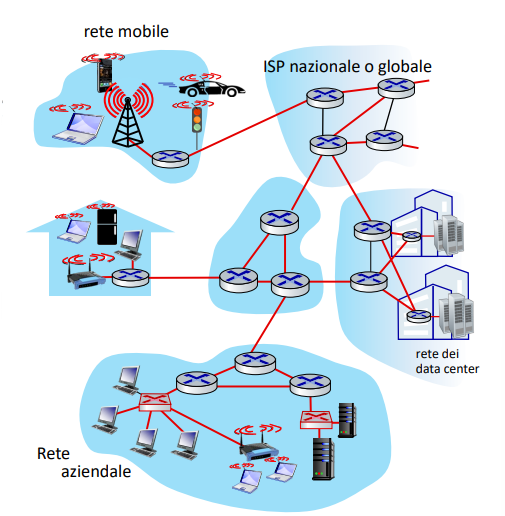
-
Possiamo notare come i livelli di tipo 2 aggiungono dettagli al formato della rete
-
Prima con il livello di rete non avevamo visione sugli switch ma solo sui router
- gli switch sono del livello 2
-
il datagramma viene trasferito da protocolli di collegamento di tipo differenti
- oltretutto anche su collegamenti di tipo differenti
- reti cavi ecc
-
dopo parleremo dei vari servizi che hanno i protocolli di collegamento ma si può tipo pensare a servizi come trasferimenti affidabili ecc 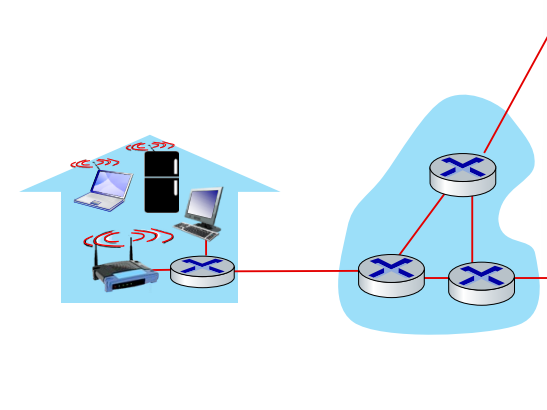
Metafora con i trasporti
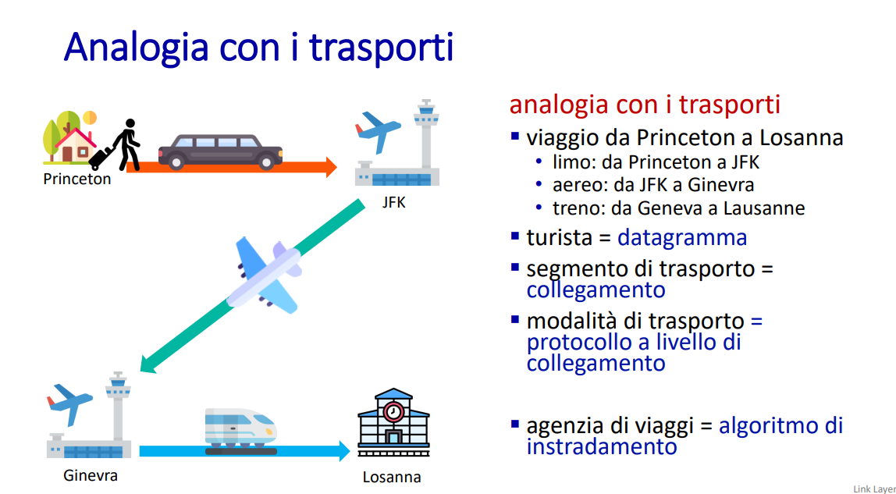
Servizi aggiuntivi del livello di collegamento
-
Framing
- Incapsula i datagrammi (provenienti dal livello di rete) in frame, aggiungendo intestazione (header) e trailer.
- Serve a delimitare l’inizio e la fine di ogni unità di trasmissione.
-
Accesso al collegamento
- Gestito da protocolli MAC (Medium Access Control) per controllare l’accesso al mezzo trasmissivo quando è condiviso (es. Ethernet, WiFi).
- Gli indirizzi MAC sono usati per identificare univocamente la sorgente e la destinazione a livello locale, diversi dagli indirizzi IP.
-
consegna affidabile tra nodi adiacenti
- Permette la rilevazione e/o correzione degli errori nei collegamenti diretti.
- Rara nei mezzi affidabili (es. cavo).
- Utile nei wireless (WiFi, cellulare) dove gli errori sono più frequenti.
- Evita di sovraccaricare i livelli superiori con ritrasmissioni, gestendo l’errore localmente.
-
controllo del flusso
- Regola la velocità di trasmissione tra mittente e destinatario adiacenti
-
rilevazione e correzione di errori sui veri e propri bit
- ogni protocollo di collegamento HA UN CONTROLLO SUGLI ERRORI
- attenzione però perché la ethernet non ha necessità di avere la correzione
- questo copre i singoli percorsi, nel livello di trasporto invece era proprio end-to-end
- ovvero da inizio a fine percorso
- Due strategie:
- ARQ (Automatic Repeat reQuest): ritrasmissioni.
- FEC (Forward Error Correction): correzione senza ritrasmissioni.
- la correzione avviene direttamente sui bit errati (FEC)
- ogni protocollo di collegamento HA UN CONTROLLO SUGLI ERRORI
-
Half-Duplex e Full-Duplex
- Half-duplex: trasmissione alternata nei due sensi.
- Full-duplex: trasmissione simultanea in entrambe le direzioni.
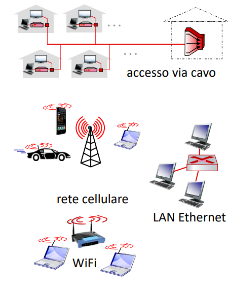
Implementazione del livello di collegamento negli host
negli host i livelli che abbiamo visto ora erano di tipo software
- quello di collegamento invece è tra hardware e software
- Presente in ogni host.
- Implementato dalla scheda di rete (NIC) o adattatore di rete.
- La NIC:
- Realizza sia il livello fisico che quello di collegamento.
- Si collega al bus di sistema (es. PCI).
- È una combinazione di hardware, software e firmware.
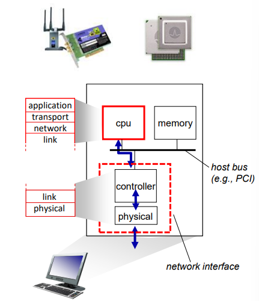
come è fatto non troppo nei dettagli un adattatore di rete negli host
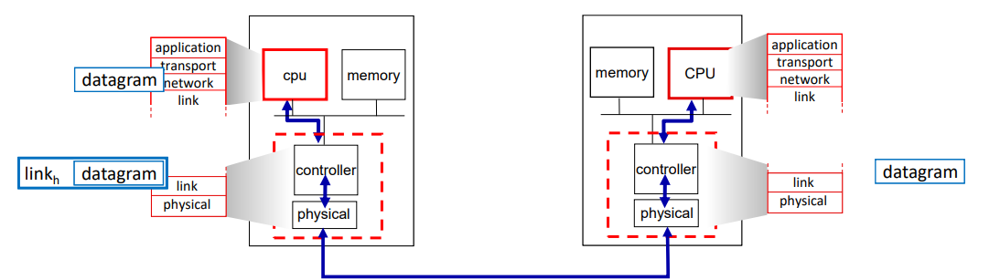 mittente vs ricevente
parte del mittente
🔧 Il controller (nella scheda di rete) si occupa di:
- Incapsulare il datagramma (proveniente dal livello di rete) dentro un frame, cioè l’unità del livello di collegamento.
- Aggiungere bit di controllo degli errori (es. checksum).
- Gestire:
- il trasferimento affidabile,
- il controllo di flusso,
- altri servizi del livello di collegamento.
💻 La CPU dell’host collabora:
- Costruisce i dati da inviare,
- Interagisce con la NIC per assemblare il pacchetto da trasmettere.
Parte del ricevente
🔧 Il controller della NIC:
- Verifica la presenza di errori nei bit ricevuti.
- Gestisce il trasferimento affidabile, il controllo del flusso, ecc.
- Estrae il datagramma dal frame e lo passa al livello di rete. 💻 La CPU riceve i dati dal controller e li elabora ai livelli superiori (rete, trasporto, applicazione).
Rilevazione degli errori nel particolare
IMPORTANTE HA DETTO la parola “CAVOLO”
Per applicare un meccanismo di rilevazione degli errori ciò che faccio è utilizzare un codice come quello EDC(Error Detection and Correction)
-
aggiungo alla informazione normale
- dei bit che servono per fare la rilevazione degli errori che sono lunghi
- i dati sono lunghi
- abbiamo una funzione f che applichiamo a D e che ci ritorna un codice EDC
- dopo aver scambiato i dati su un collegamento a potenziali errori
- controlliamo D’ e gli applichiamo la stessa funzione
- se ci da EDC’ uguale a EDC precedente ecco fatto nessun errore 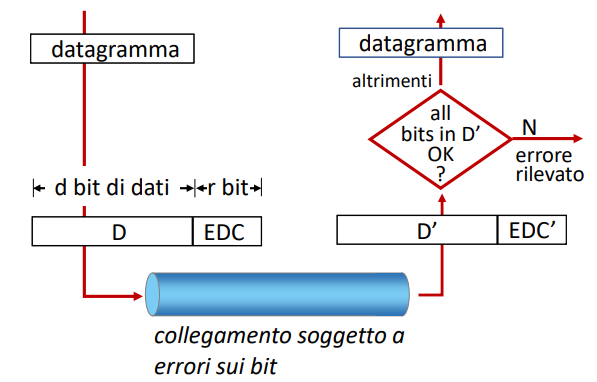
-
non usiamo funzioni troppo complesse perché aumenterebbero troppo overhead
possibili problemi
- Non è affidabile al 100%.
- Possibilità di errori non rilevati (es. quando D′ produce casualmente lo stesso EDC).
- La probabilità di mancata rilevazione è ≈
2⁻ʳ(r = bit dell’EDC).
ovviamente più si aumentano i bit di rilevazione più è facile rilevare errori
- questo però comporta aumenti di overhead
Tecniche sensate per fare il controllo degli errori
Bit di parità
Singolo bit di parità
- Si aggiunge 1 bit ai dati per rendere il numero di 1 pari o dispari (a seconda della parità scelta).
- Il ricevente ricalcola la parità e la confronta con quella ricevuta:
- se coincidono → nessun errore rilevato;
- se divergono → errore rilevato. 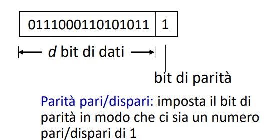 ⚠️ Può rilevare solo un numero dispari di errori → se gli errori sono 2, 4, ecc. non li vede!
Esempi con bit di parità in due dimensione:
- Organizza i bit in una matrice (righe e colonne).
- Aggiunge bit di parità per ogni riga e ogni colonna.
- ✅ Permette di:
- rilevare tutte le combinazioni fino a 3 errori,
- correggere 1 errore singolo (incrociando la riga e la colonna con parità errata). 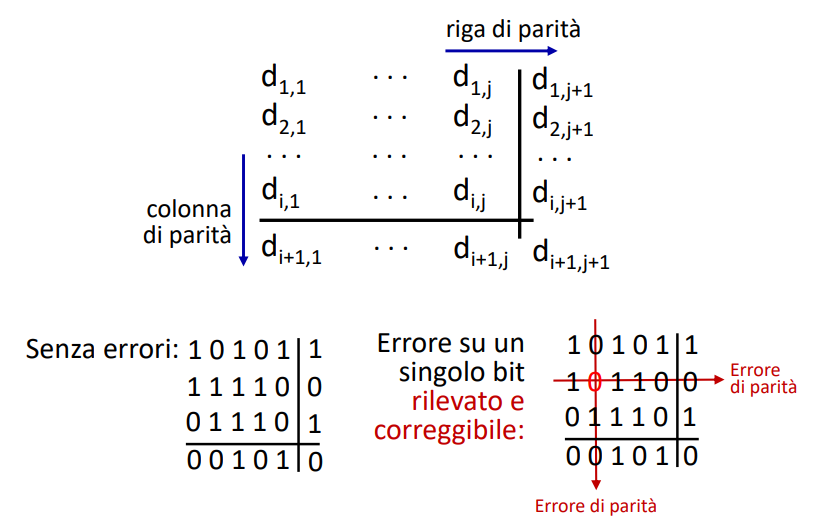
Limiti del controllo di parità: gli errori a burst
Il controllo di parità (singolo bit) è adatto se:
- gli errori sono rari,
- gli errori sono indipendenti (cioè sparsi casualmente). ma il problema è che in realtà:
- Gli errori reali tendono a essere “a burst”:
- più bit consecutivi vengono alterati insieme (es. interferenza elettromagnetica).
- In questo caso, un singolo bit di parità può fallire nel rilevarli. 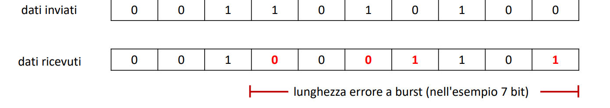
ESEMPI
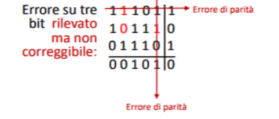 ad una riga viene rilevato un errore di parità ma non si riesce a capire a quale colonna corrisponde per correggerlo
- ci sono 3 errori e non 1 che son fuori
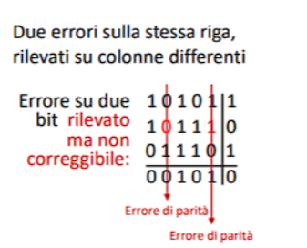
anche qui non sa quale correggere
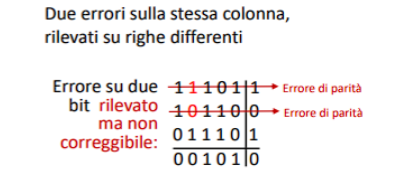
 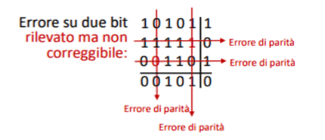
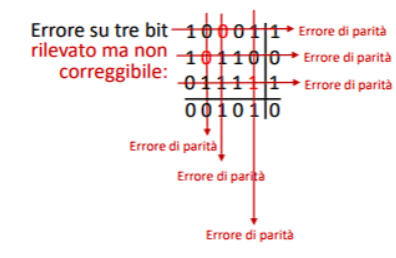
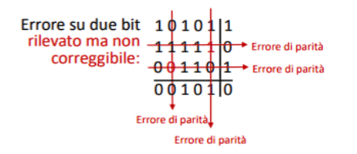
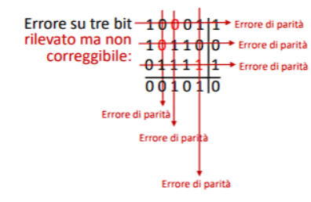
Quando ci sono più righe e più colonne non riesce a correggere e rilevare l’errore
Checksum internet
Il checksum è un meccanismo di controllo dell’integrità dei dati che viene usato su Internet, ad esempio nei protocolli IP, TCP e UDP. Serve per verificare che i dati inviati non siano stati alterati durante la trasmissione.
Mittente:
- Interpreta il contenuto del pacchetto come una sequenza di interi a 16 bit (compresi intestazione e indirizzi IP).
- Somma tutti questi numeri usando l’aritmetica in complemento a 1.
- Calcola il complemento a 1 del risultato e lo inserisce nel campo checksum.
Ricevente:
- Somma tutto, compreso il checksum ricevuto.
- Controlla se il risultato è tutto 1 (che equivale a 0 in complemento a 1):
- Se sì → nessun errore.
- Se no → errore presente.
- In alternativa, può rifare il complemento a 1: se il risultato è tutto zero, va bene.
CRC Codici di Controllo a Ridondanza Ciclica
Il CRC (Controllo di Ridondanza Ciclico) è un sistema molto affidabile e più potente del checksum tradizionale per rilevare errori nei dati trasmessi. Viene usato, ad esempio, nelle reti Ethernet, nei dischi e nei protocolli avanzati di comunicazione.
📦 Elementi di partenza:
- D: i dati da trasmettere (una sequenza di d bit).
- G: una sequenza di r+1 bit chiamata generatore, nota sia al mittente che al destinatario.
👤 Lato mittente (chi invia):
- Il mittente deve calcolare r bit (chiamati R) da aggiungere ai dati D.
- Lo fa in modo che la sequenza completa
<D,R>(cioè D seguita da R) sia divisibile per G, usando una divisione speciale in aritmetica modulo 2 (cioè si lavora solo con 0 e 1, e le operazioni si fanno con lo XOR al posto della normale sottrazione, senza riporti). - In sostanza, R viene calcolato come il resto della divisione tra D⋅2ʳ e G. Si scelgono gli R in modo che il resto sia zero.
👉 Nota evidenziata:
<D,R>vuol dire semplicemente che si prende la sequenza D e poi si attaccano i bit R alla fine.
📥 Lato destinatario (chi riceve):
- Riceve la sequenza
<D,R>. - Esegue la divisione per G:
- Se il resto è zero, significa che non ci sono stati errori: tutto ok.
- Se il resto è diverso da zero, allora c’è stato un errore nella trasmissione.
📌 Proprietà utili del CRC:
- È molto bravo nel rilevare errori a raffica (cioè quando più bit consecutivi si corrompono).
- Più è grande il numero di bit di controllo (r), maggiore è la capacità di rilevare errori.
- È ampiamente usato in reti come Ethernet, WiFi, ecc.
🧮 Operazioni usate nel CRC
▶️ Addizione e sottrazione:
- In modulo 2, l’addizione e la sottrazione sono identiche.
- Si usa lo XOR bit a bit (esempio:
1011 XOR 1101 = 0110) - Non c’è mai il riporto, quindi tutto è più semplice rispetto all’aritmetica decimale.
▶️ Moltiplicazione e divisione:
- Si fanno come nel sistema decimale, ma usando XOR al posto delle somme normali.
- L’operazione è analoga alla moltiplicazione a mano: si sommano i termini spostati (shiftati), ma con XOR al posto del ”+”.
- Anche qui non esistono riporti.
Esempio di moltiplicazione:
1011 × 101 = 1011 + 0000 (perché il secondo bit di 101 è 0) +1011 << 2 (cioè 1011 spostato di due posizioni) = 100111
🧠 Rappresentazione dei bit come polinomi
Nel CRC, si può pensare ogni sequenza di bit come un polinomio, dove ogni bit a 1 rappresenta una potenza di x.
1011 → 1·x³ + 0·x² + 1·x¹ + 1·x⁰ = x³ + x + 1
Quindi, la moltiplicazione di due sequenze binarie è come la moltiplicazione di due polinomi:
(x³ + x + 1) × (x² + 1)
Quando si sommano termini identici (es. due volte x³), si fa XOR:
x³ + x³ = 0 (perché 1+1 = 0 in modulo 2)
Alla fine otteniamo un polinomio risultato, che può essere ricondotto di nuovo a una sequenza binaria.
✅ Come il mittente calcola i bit di controllo (R)
L’obiettivo è trovare dei bit di controllo (R) da aggiungere ai dati (D) in modo che l’intera sequenza finale sia divisibile per G (il polinomio generatore)
📘 Passaggi:
- Il mittente prende i dati D.
- Aggiunge in fondo a D r zeri (indicati come D·2ʳ): questo crea lo spazio per i bit di controllo.
- Esegue una divisione binaria (con lo XOR) tra D·2ʳ e G.
- Il resto della divisione è proprio R → i bit di controllo.
- Il messaggio finale trasmesso sarà: D seguito da R.
🧠 Ricorda: le operazioni sono in modulo 2, quindi si usa l’XOR e non ci sono riporti.
✏️ Esempio pratico:
- D =
101110 - G =
1001(4 bit → r = 3) - Si aggiungono 3 zeri a D:
101110000 - Si divide
101110000 ÷ 1001usando XOR - Il resto della divisione è
011→ questo è R - Il messaggio completo da inviare è
101110011(D + R)
🚀 Cosa invia il mittente
Il pacchetto finale inviato (T) è:
T = D · 2ʳ ⊕ R
Ovvero
- D = i dati
- 2ʳ = serve a fare spazio per R
- R = i bit di controllo calcolati con la divisione
- Il mittente invia quindi D seguito da R
📥 Come il ricevente verifica se ci sono errori
Il ricevente riceve T’, cioè il messaggio ricevuto (che può essere uguale a T o alterato da errori).
-
Se non ci sono errori:
T’ = T -
Se ci sono errori, possiamo scrivere:
T’ = T ⊕ E, dove E è il “polinomio errore” (i bit a 1 indicano dove ci sono errori). Il ricevente divide T’ per G:
- Se il resto è 0, allora E era divisibile per G e l’errore non viene rilevato.
- Se il resto è diverso da 0, allora E non è divisibile per G e l’errore viene rilevato
🟡 Conclusione importante: la scelta del generatore G è cruciale. Deve essere fatta in modo che non divida mai i polinomi errore più comuni, altrimenti gli errori passano inosservati.
✅ Come scegliere G: attenzione alla parità
Quando scegliamo un polinomio generatore G, dobbiamo evitare che abbia un numero pari di bit a 1. Questo perché il CRC lavora con lo XOR, che è sensibile alla parità (cioè al numero di bit a 1).
📘 XOR e parità:
- Se fai XOR tra due numeri con parità diversa → ottieni un risultato dispari
- Se fai XOR tra due numeri con parità uguale → ottieni un risultato pari
❌ Problema:
Se G ha un numero pari di bit a 1, e si verifica un errore che cambia un numero dispari di bit, allora il CRC potrebbe non accorgersene.
Questo perché:
- Durante la divisione CRC, G viene shiftato e usato nello XOR.
- Se G ha parità pari, anche tutti i multipli di G avranno parità pari → quindi se fai XOR con un errore a parità dispari, la parità non cambia e l’errore passa inosservato.
🧠 Soluzione: scegliere bene G
✅ Buone pratiche:
- Scegliere G con un numero dispari di bit a 1
- Scegliere G con almeno due bit a 1, così:
- Può rilevare qualsiasi errore su un solo bit
- Può rilevare errori particolari, come due bit errati lontani tra loro, o molti errori consecutivi
💡 Esempio finale:
Se un errore corrisponde a un polinomio come E(x) = x³, allora questo errore è divisibile solo da polinomi semplici, come x, x², x³, ecc.
Se G ha almeno due termini (es. x³ + 1), non può dividere x³, e quindi un errore su un solo bit viene rilevato.